Our Officers

Pratyush Verma
Position: Public Relations Committee Chair
Description of the officer's role and background goes here.
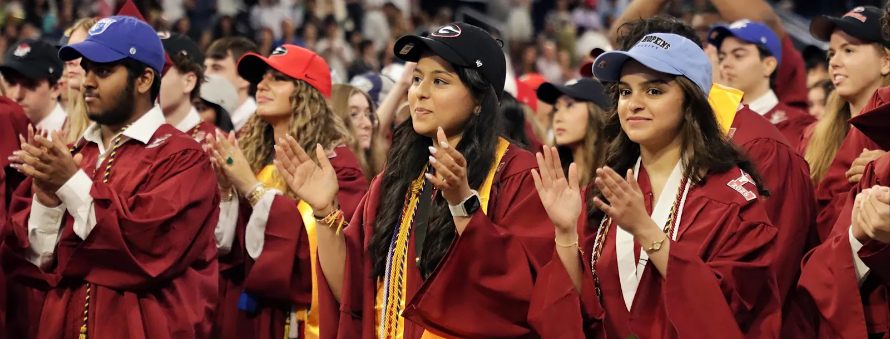
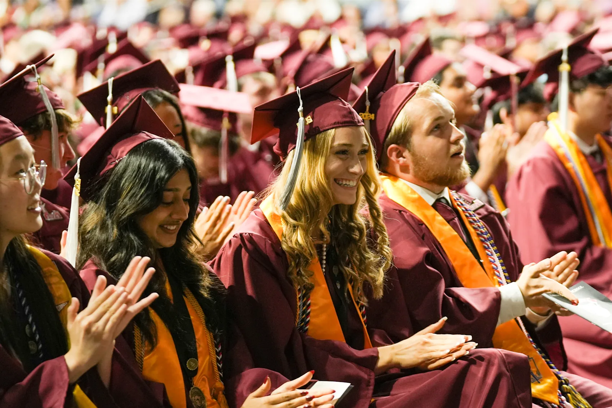
Lambert High School's TSA chapter is launching a new season with one goal: bringing the benefits of the Technology Student Association to more students in Forsyth County while embracing the 2026 conference theme, "Unity Through Community." Our officers recognize how TSA strengthens schools through leadership, teamwork, and real-world problem solving, and they continue creating opportunities for Lambert students to innovate and compete.
As the chapter prepares for this season, planning and coordination with school administration remain important. Mr. Sullivan, the chapter head and advisor, provides steady guidance and support by helping officers navigate requirements, organize responsibilities, and set clear expectations so the chapter can stay organized and successful.
This year, Lambert TSA is preparing for a full conference season, entering events across engineering, design, and communications. The chapter is focused on building a strong foundation by:
This season is another step forward in Lambert TSA's growing tradition. With Mr. Sullivan's leadership and the dedication of our officers and members, Lambert TSA is proud to keep making an impact locally, statewide, and beyond through unity, service, and innovation.
Georgia TSA gives middle and high school students the opportunity to develop real world skills through hands-on competition and collaboration. With more than seventy competitive events available, members can pursue pathways that match their interests while still pushing themselves academically. Chapters often spend months designing, testing, and documenting their work, helping students learn how to think like engineers, communicate like professionals, and improve through feedback even when their first attempt is not perfect.
The experience culminates at the State Leadership Conference, typically held in March at the Classic Center in Athens. Thousands of students gather to present projects, take exams, interview with judges, and connect with other chapters, all while strengthening leadership through teamwork and chapter involvement.
Georgia TSA offers a wide range of events that allow every type of student to contribute, including:
In addition to the State Leadership Conference, Georgia TSA hosts seasonal opportunities such as Technology Day at the Georgia National Fairgrounds in Perry, where students compete in additional contests, experience a high-energy rally atmosphere, and build confidence by performing under time pressure while learning from other competitors.
Position: Public Relations Committee Chair
Description of the officer's role and background goes here.
Tech Day is an introductory Georgia TSA event focused on giving students hands-on exposure to STEM fields and TSA events. Students rotate through interactive workshops and short activities that introduce skills such as design thinking, engineering concepts, coding, and problem solving. These activities allow students to explore different event areas without the pressure of competition and help them discover what types of TSA events they may be interested in pursuing later in the year.
Tech Day typically takes place at a host school or local venue and is designed especially for new and prospective members. The environment is relaxed and collaborative, allowing students to work in groups, ask questions, and learn from officers and advisors. This event helps students build confidence, understand how TSA events work, and become more comfortable participating in future conferences.

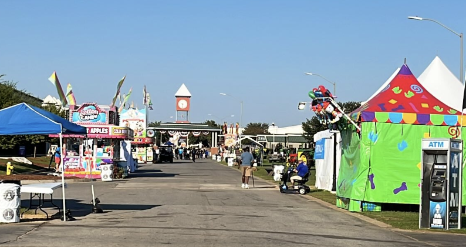
Fall Rally is a high-energy kickoff event that focuses on leadership development and chapter unity. Students participate in motivational sessions, leadership workshops, and team-building activities that emphasize communication, collaboration, and involvement. These sessions help students understand the importance of leadership within TSA and encourage them to take an active role in their chapter.
Fall Rally is usually held at a central location and brings together TSA members from across the state. Students have the opportunity to meet members from other chapters, build connections, and learn about statewide goals for the TSA year. The event helps set expectations for the season while creating excitement and enthusiasm moving forward.
The CORE Leadership Conference (CORE) is a Georgia TSA event focused on developing essential leadership skills for both new and experienced members. Students participate in interactive sessions centered on communication, teamwork, responsibility, and problem solving. Activities are designed to help students build confidence, improve collaboration, and better understand what it means to be an effective leader within their chapter and beyond.
CORE typically takes place at a conference center or host school and provides a supportive environment for students to grow as leaders. Members work with peers from other chapters, reflect on their leadership strengths, and learn how to apply these skills within their own TSA chapter. The conference emphasizes personal growth, accountability, and leadership that positively impacts both the school and the broader community.
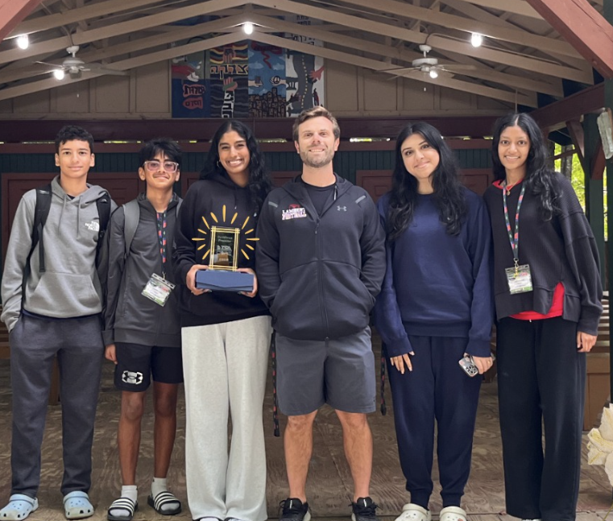
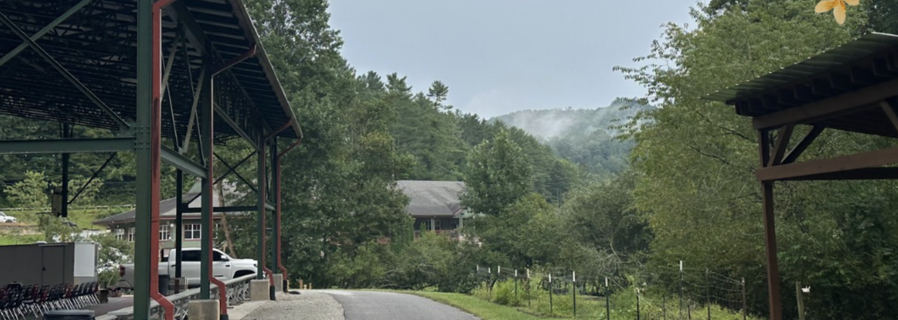
The Fall Leadership Conference (FLC) focuses on building leadership skills early in the TSA season. Students attend structured workshops that cover topics such as teamwork, communication, organization, and time management. Many sessions are interactive, allowing students to practice leadership skills through group activities and discussions.
FLC typically takes place at a conference center or large host school and brings together TSA members from across Georgia. Students network with peers, learn from experienced leaders, and gain insight into officer roles and competition expectations. This conference helps students feel more prepared for events, leadership opportunities, and long-term involvement in TSA.
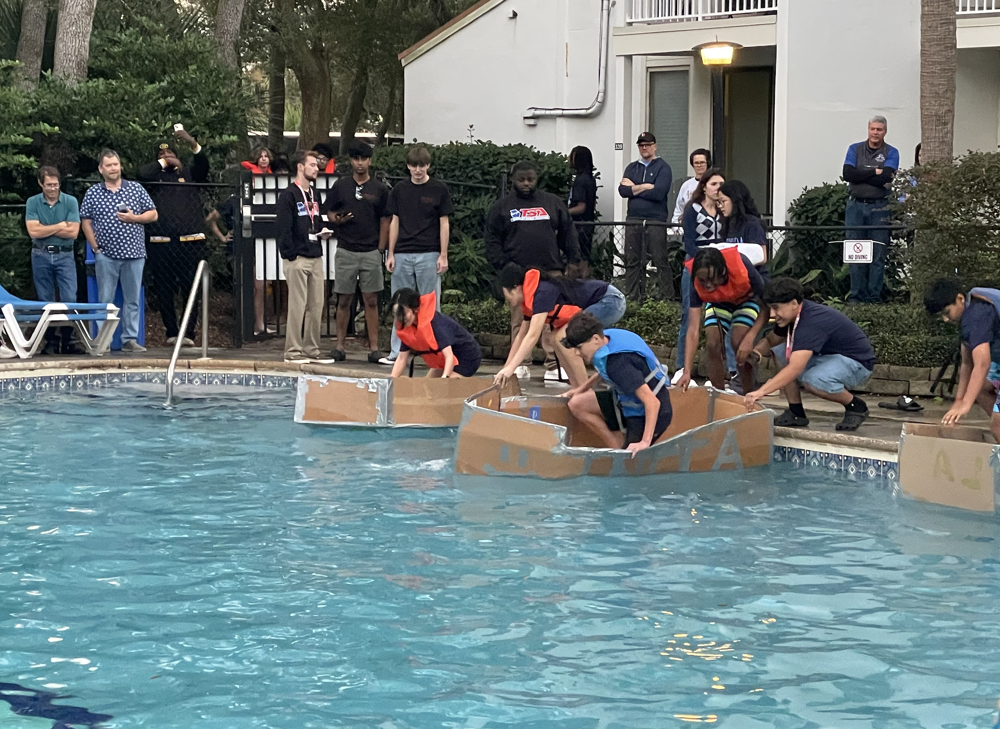
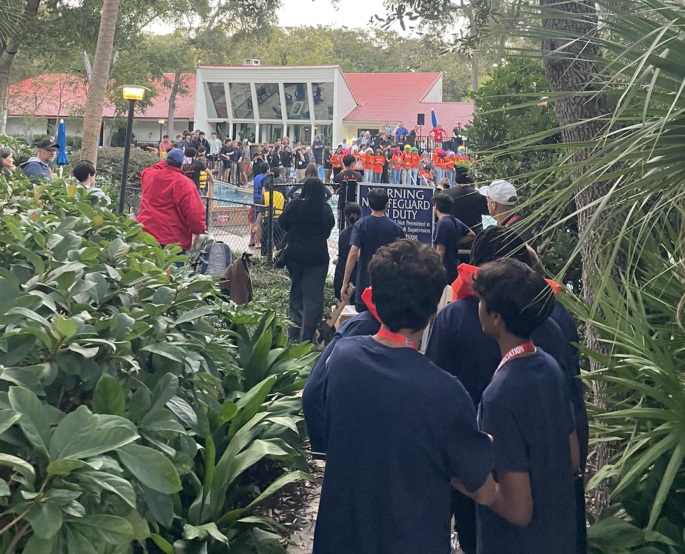
The State Leadership Conference (SLC) is Georgia TSA's main competitive event, where students compete in a wide range of STEM and leadership competitions. These include engineering design challenges, coding events, presentations, and on-demand problem-solving events. Students present projects they have worked on throughout the year and are evaluated by judges based on event guidelines.
SLC is typically held at a large convention center or conference venue and includes opening and closing ceremonies, officer elections, and award sessions. Students receive recognition for strong performances, and top competitors qualify to advance to the National Leadership Conference. SLC serves as a culmination of months of preparation and teamwork.
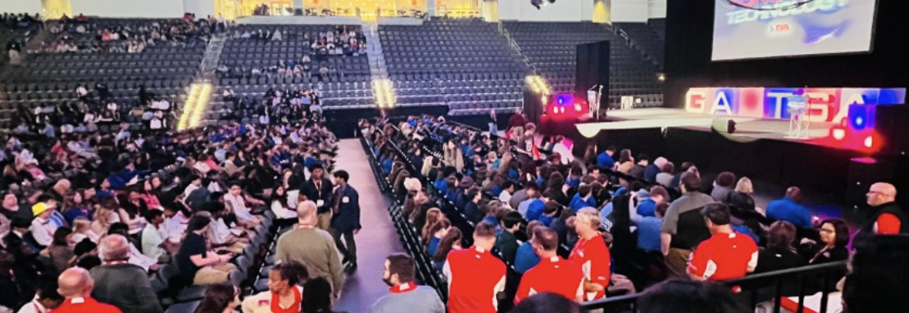
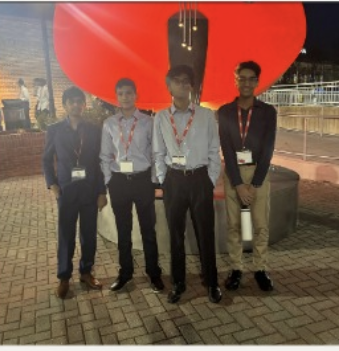
The National Leadership Conference (NLC) is the highest level of TSA competition and brings together students from across the country. Qualified members compete in advanced STEM and leadership events against top teams nationwide. These competitions challenge students to apply technical skills, creativity, and critical thinking at a national standard.
NLC takes place at a major convention center in a different U.S. city each year. In addition to competitions, students attend large leadership sessions, hear from national speakers, and explore exhibitions featuring colleges, companies, and industry professionals. NLC provides students with valuable exposure to future academic and career opportunities while representing their state at the national level.
Regular monthly meetings where members collaborate on projects, receive updates on competitions, and work together to prepare for TSA events. Officers provide guidance and support to help teams stay on track.
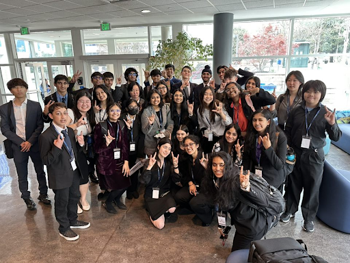
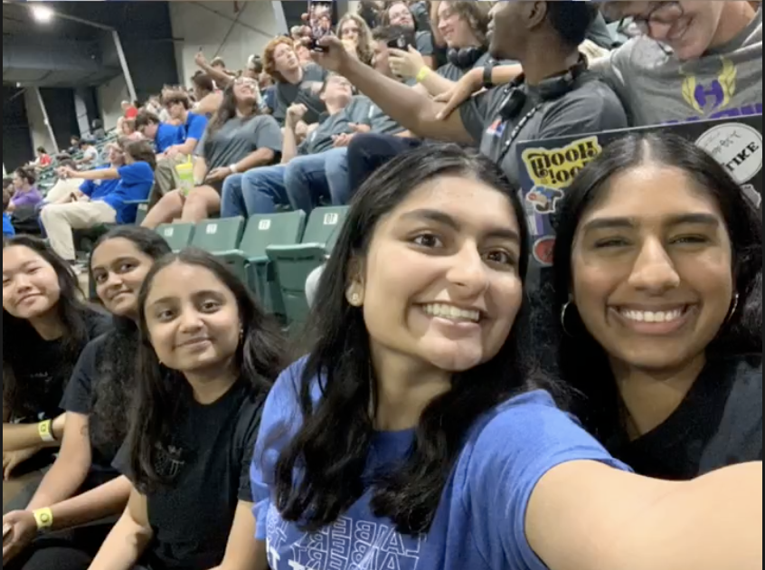
Active outreach to bring new members into Lambert TSA, welcoming students from all backgrounds who are interested in technology, engineering, and leadership development.
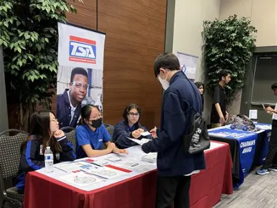
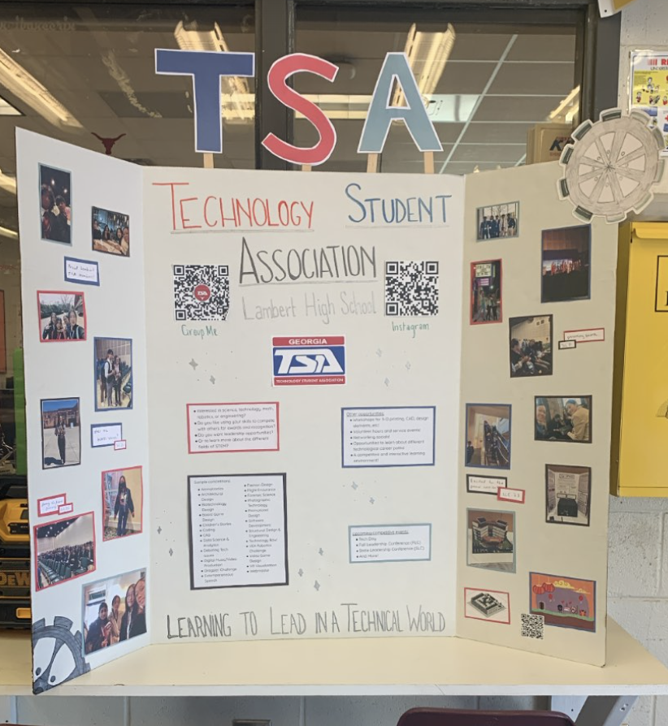
Fun social events that bring our chapter together, building friendships and team spirit while celebrating our achievements and creating lasting memories.
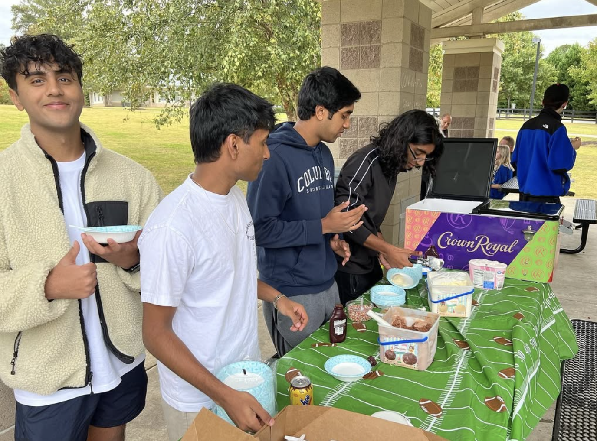
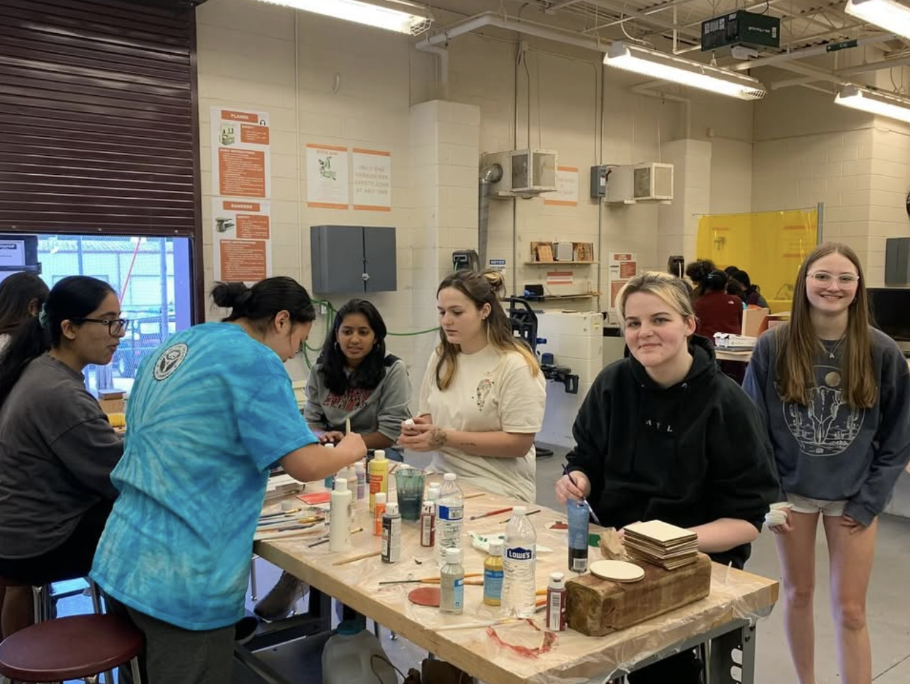
Giving back to our local community through STEM education initiatives, volunteer work, and partnerships that promote technology and engineering among younger students.
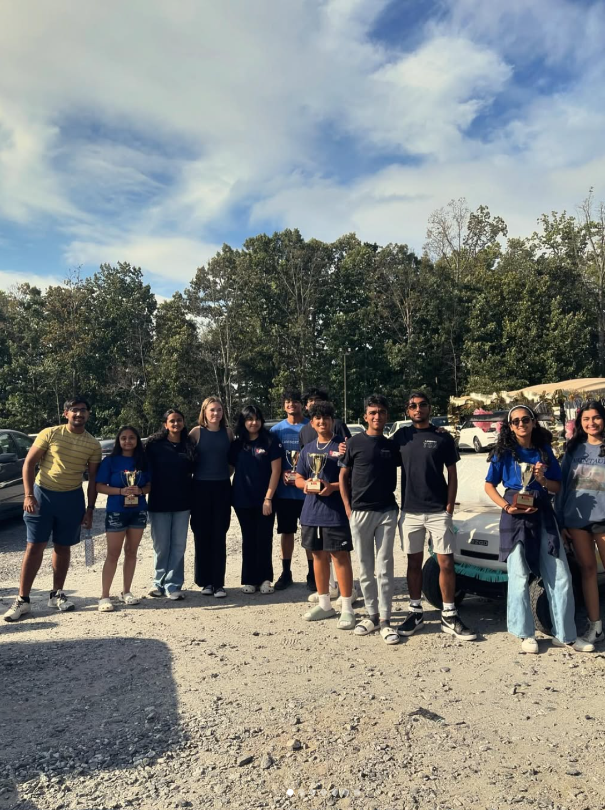
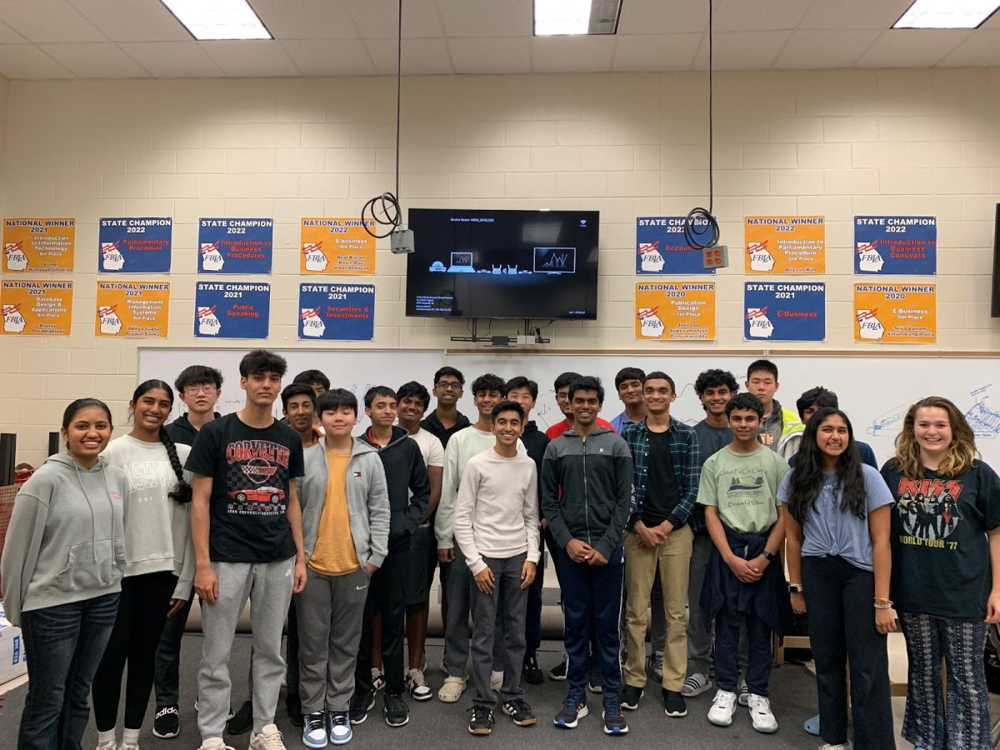